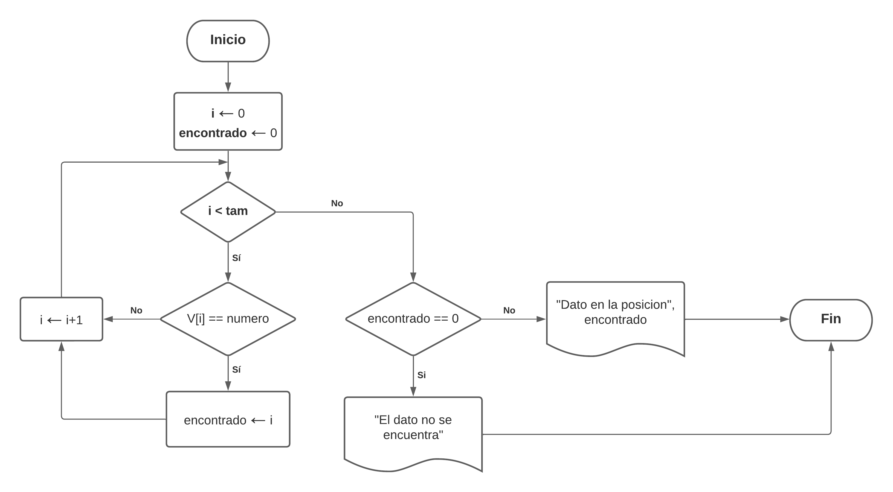
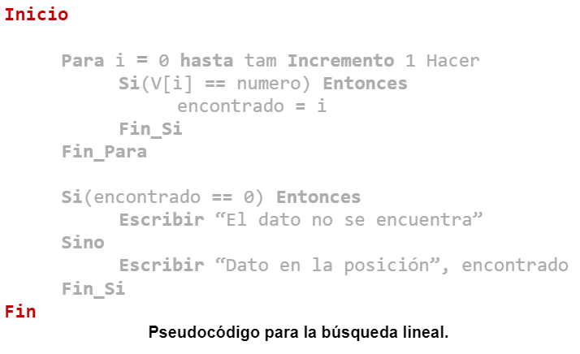

Funcionamiento del algoritmo
El método de búsqueda lineal funciona de la siguiente forma:
1. Preparación
Se declara una variable auxiliar con el propósito de almacenar en su interior la posición en la que se encuentra el elemento a buscar (En caso de que se encuentre dentro del arreglo).
2. Comparación
El proceso de búsqueda se realiza de forma secuencial, comparando cada elemento del arreglo con el elemento buscado, comenzado desde la primera posición del arreglo hasta llegar a la última posición.
3. Identificación
Si el elemento que se está comparando es igual al buscado, entonces se almacena su posición en la variable auxiliar que se declaró al inicio del algoritmo.
4. Verificación del resultado de la búsqueda
Al finalizar la búsqueda, se revisa el contenido de la variable auxiliar.
Si el valor que tiene la variable auxiliar es diferente al que se le asignó inicialmente, entonces eso indicaría que el elemento buscado se encuentra dentro del arreglo, cuya posición está almacenada en la variable auxiliar. En caso contrario, se considerará que el elemento no se encuentra dentro del arreglo.
Diagrama de flujo

Pseudocódigo

Características
- Sencillo de implementar.
- Se considera como un algoritmo de búsqueda secuencial debido a la forma en la cual trabaja (Compara elemento por elemento).
- Es posible utilizarlo en listas ordenadas y desordenadas.
- Eficiente en arreglos con pocos elementos.